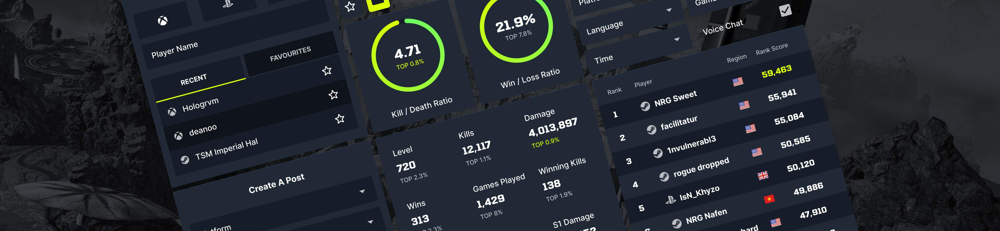
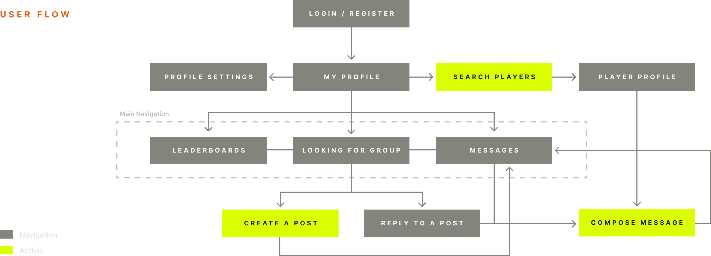
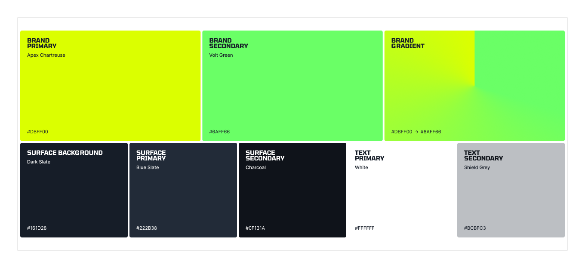
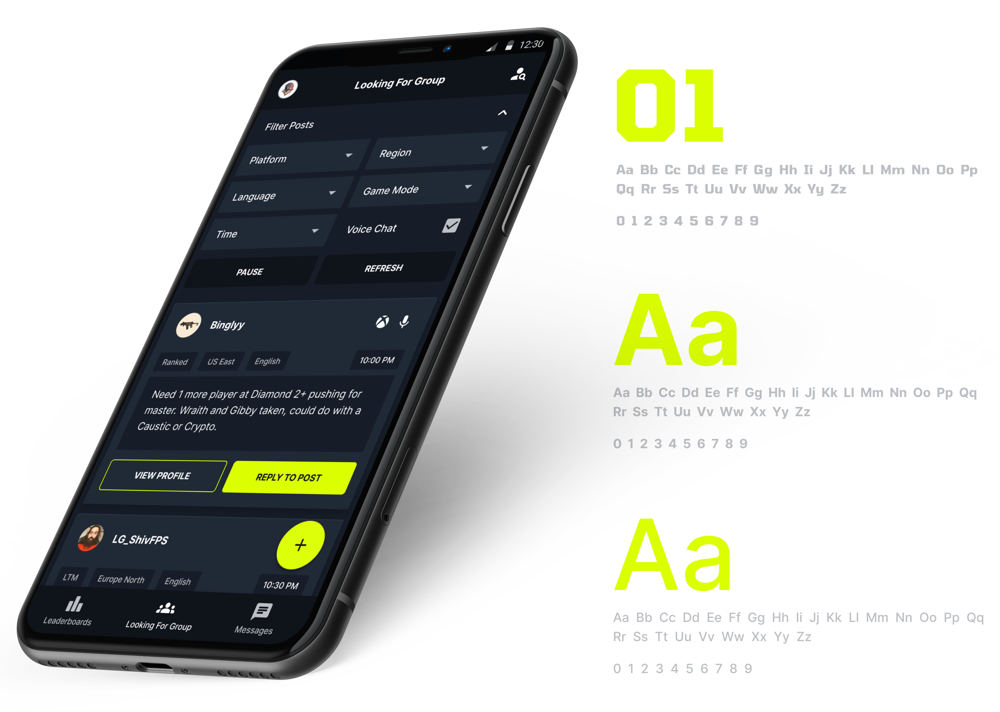

Apex Audit is a design concept for a stat-tracking mobile app for the popular battle-royale game Apex Legends. Its aim is two-fold: give players a way to track personal progress through their in-game data, and help connect players who are looking to team up — with performance data on hand to inform who they’d like to play with.
Case Study 03 · Concept
APEX audit
A stat-tracking and social mobile app concept for Apex Legends — surfacing player performance and helping people connect with similarly skilled teammates.

01 — UX User flow & navigation
Information architecture
The user-flow diagram below outlines the various navigation options in the app along with its actionable features — from stat dashboards to social discovery and match history.

A representative user journey
Below is an example journey for a player looking for one or two more teammates of similar skill to group up with. They have two routes, depending on whether they want to create a post or browse existing ones that suit them.
The aim is to connect players and let them organise playing together via the in-app messaging system. Since the app doesn’t control in-game inviting or joining, messaging acts as the jumping-off point in the user’s journey — handing off to the game itself when the lobby forms.

02 — UI Design Visual language
Typography & data
Player stats sit at the heart of the app, so the UI highlights any relevant numbers and data points in a unique geometric typeface, paired with a cleaner sans-serif for navigation, labels, and supporting copy.

Colour, depth & status
Colour does double duty: highlighting actionable or important features, and creating depth that separates background from foreground. A bright accent yellow flags any data point where a player is in the top 1% — a small status marker that gives users an at-a-glance read on a profile’s strengths and motivates others to chase that rare badge.


03 — Brand Identity & system
Logo & mark
The Apex Audit identity leans on a sharp, geometric logomark — echoing the precision of the in-game data the product surfaces. Colour and type are tuned to feel native to a gaming audience without slipping into stereotypes.


